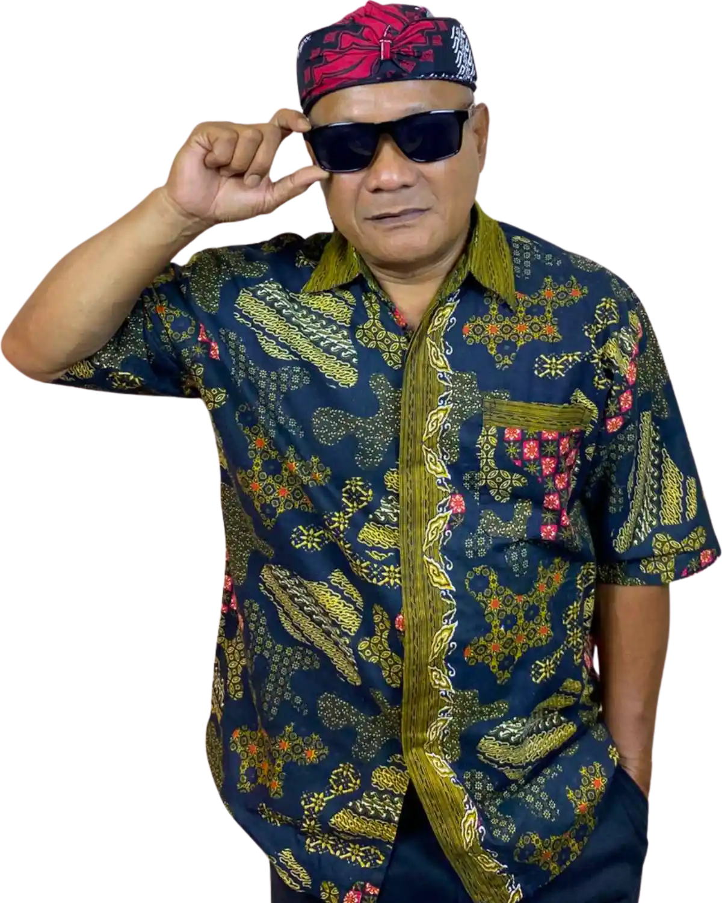
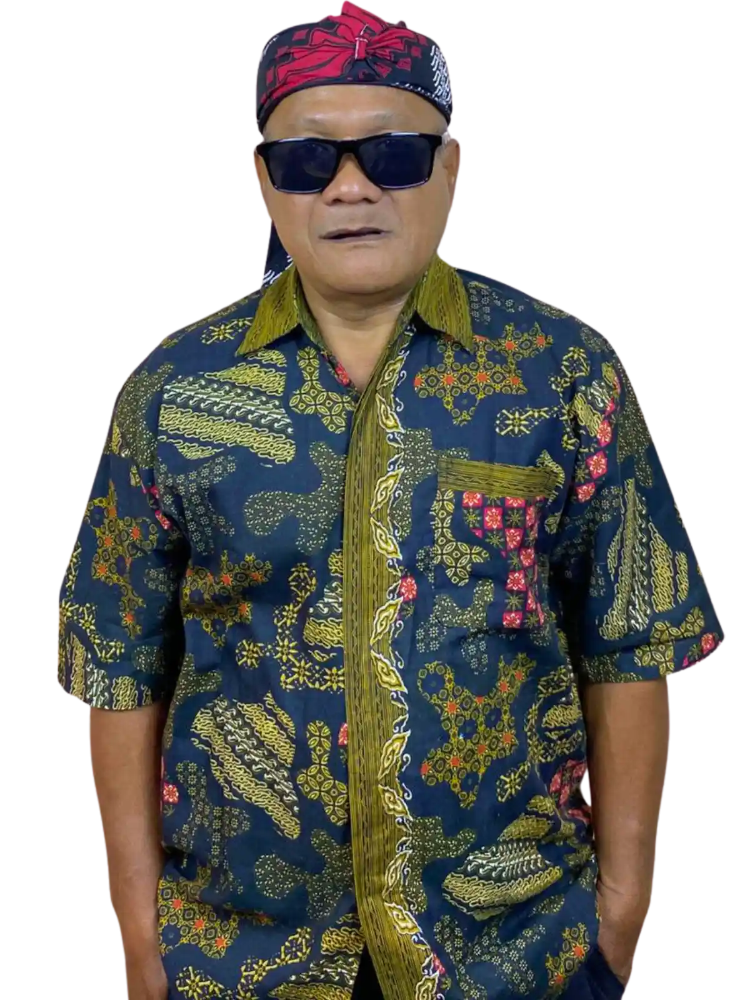
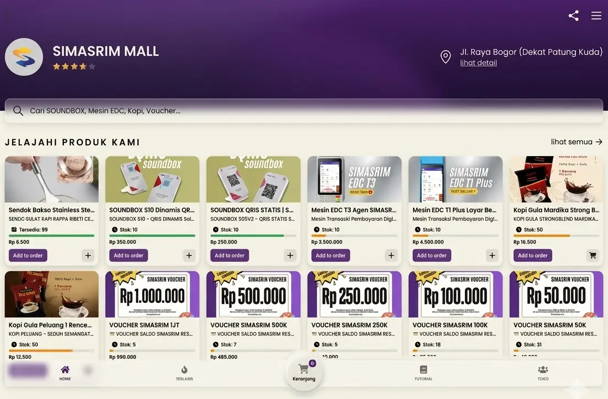
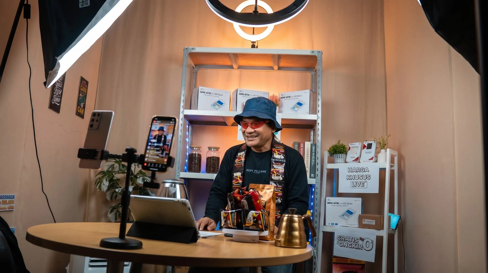
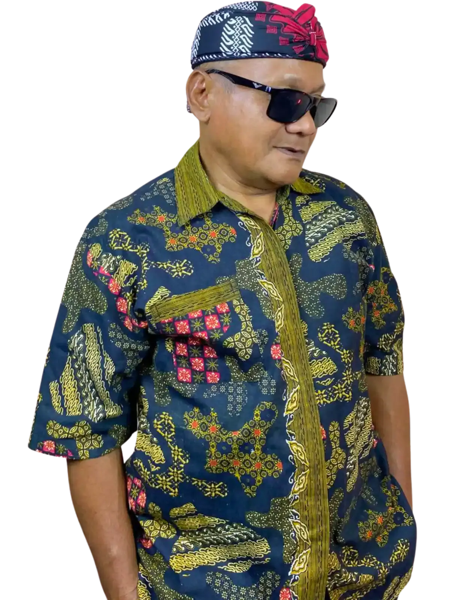

Bukan sekadar jualan,
ini soal obrolan warung kopi.
Sosok "Bapak-bapak" otentik yang siap membawa engagement natural ke Live Anda. Tanpa teriak-teriak. Hanya cerita jujur, ngopi santai, dan keranjang kuning yang terus di-checkout.

Karakter Kuat & Otentik
Gaya iket kepala tradisional yang membangun kedekatan instan dengan audiens.
Market Fit Spesialis
Audiens bertahan lama karena gaya storytelling yang tidak buru-buru.

Seperti kawan yang merekomendasikan barang terpercaya.
Di Balik Layar
Intip keseruan dan interaksi otentik Babeh Wan saat Live Streaming.
Dukungan Ekosistem SIMASRIM
Lebih dari sekadar Host. Bekerja sama dengan Babeh Wan berarti produk Anda terintegrasi langsung dengan mesin penjualan dan fasilitas premium PT SMA.

Listing di Mall SIMASRIM
Produk Anda otomatis masuk ke katalog e-commerce kami. Tidak hanya dijual saat live, tapi juga dibuka aksesnya untuk dipasarkan kembali oleh ratusan jaringan user & reseller SIMASRIM yang siap membantu dorong volume penjualan Anda.

Studio Live Mumpuni
Kualitas visual dan audio yang menjamin retensi penonton. Sesi Babeh Wan dieksekusi di In-House Studio PT SMA dengan pencahayaan profesional, kamera resolusi tinggi, dan audio setup yang jernih.
Investasi Kolaborasi
Manfaatkan Introductory Rate selama fase rising star ini.
Shopee Host Session
- 2 Jam Live Stream
- Akses Studio SIMASRIM
- Listing Mall (Bantu Jual via Reseller)
TikTok Live Interaction
- 2 Jam Live Stream
- Q&A Interaktif Audiens
- Push Keranjang Kuning Terukur

Kunci slot Anda sebelum jadwal penuh.
Babeh Wan dikelola secara eksklusif oleh manajemen profesional PT Solusi Mitra Aplikasi (SIMASRIM). Kami memastikan SLA, kualitas produksi, dan pelaporan yang transparan.
Chat Manajemen (WhatsApp)